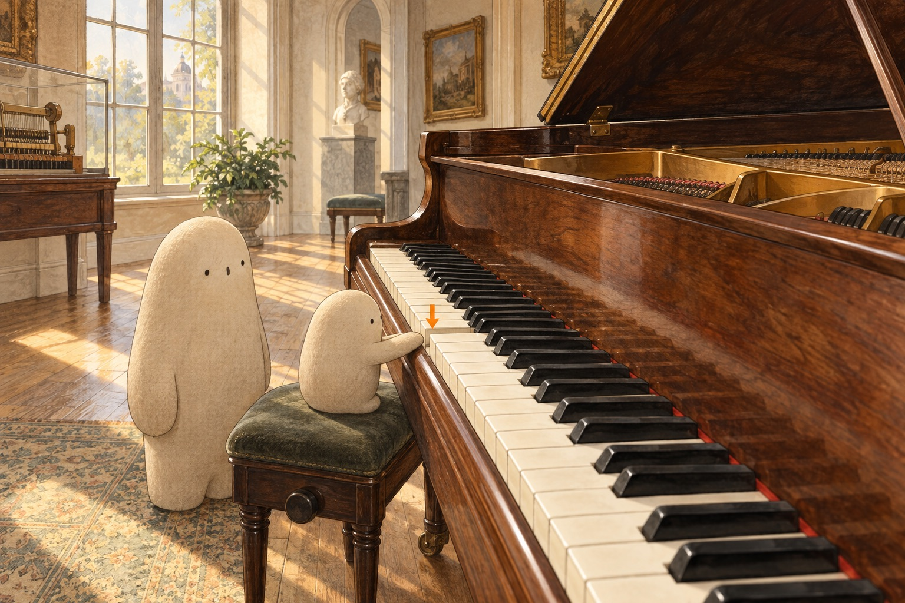

01Where could a note be hiding?

Look closer. Find Little's hand and the orange arrow. One key moves only a little. Where would you look for what happens next?
A little explanation. The piano is not a box of stored notes. Pressing a key starts moving parts inside. In an acoustic piano, those parts send a small hammer toward metal strings. The next picture lets us look at a model of that hidden motion.
Try this. Pretend the tabletop is a piano key. Lower one finger quietly, then lift it. Say what you imagine moving inside.